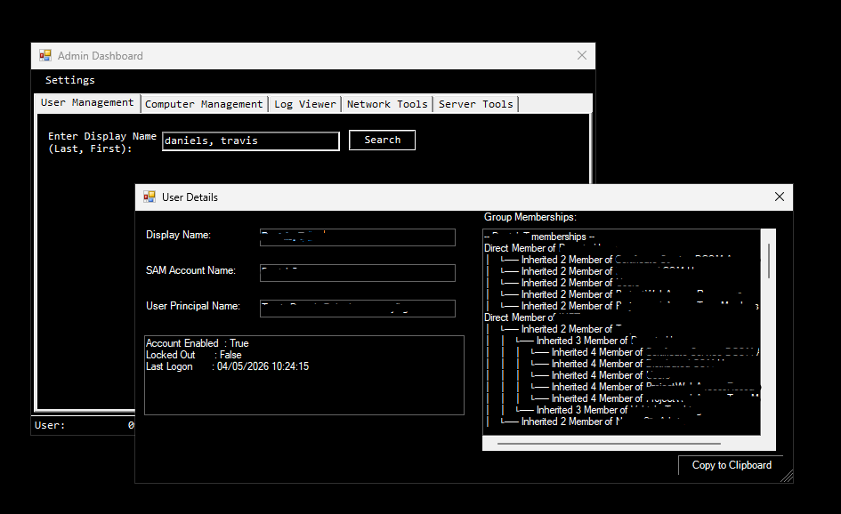

Short-Term Goals
- Continue developing automation solutions using PowerShell
- Expand hands-on experience with Microsoft 365 security tools
- Strengthen skills in email security and identity protection
I am currently working as a Systems Administrator with a focus on Microsoft 365, Active Directory, and infrastructure management. Through this role, I have developed a strong interest in security, particularly in email security, identity management, and access control.
My goal is to continue building on my hands-on experience by improving automation, strengthening system security, and expanding into more advanced security-focused roles.

Centralized administrative dashboard used to manage AD group lookups, account unlocks, server connectivity checks, and other administrative tasks.
Technologies: PowerShell, Active Directory, Windows Forms
I'm always open to discussing new opportunities, collaboration, or anything related to systems administration and security.
Email: travis.daniels4@yahoo.com